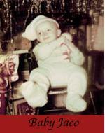

|

|

|

|
Home |
Pastorius was born in Norristown, Pennsylvania, but soon moved to Oakland Park, Florida,  where he was raised. He went to elementary and middle school at St. Clement's Catholic School (he was an altar boy at the adjoining church) in nearby Wilton Manors. He went to high school at Northeast High in Oakland Park. Originally a drummer, following in the footsteps of his Dad, journeyman stand-up drummer Jack Pastorius, Jaco switched to bass at age 15. He was playing in a nine-piece horn band at the time called Las Olas Brass, which covered popular material of the day by the likes of Aretha Franklin, Otis Redding, Wilson Pickett, James Brown and the Tijuana Brass. The switch to bass, Jaco confessed, was actually not his own choice, but was the result of an injury caused during football practice by a prank tackle gone wrong; it severely limited the strength in his left hand and wrist. He played music throughout his youth, and in 1974, he began playing with his friend and later famous jazz guitarist Pat Metheny. Pastorius's first album, titled Jaco Pastorius (1976), was a breakthrough album for the electric bass. Many consider this to be the finest bass album ever recorded, along with Stanley Clarke's School Days. Jaco Pastorius exploded onto the jazz scene and was instantly revered by Jaco Pastorius's contemporaries. Pastorius also made an important appearance on Pat Metheny's breakthrough album, Bright Size Life. Shortly after the release of these albums, Pastorius was invited to join fusion band Weather Report, where he played alongside Joe Zawinul and Wayne Shorter until 1981. It is with Weather Report that Jaco made his indelible mark on jazz music, being featured on one of the most popular jazz albums of all time, Heavy Weather. After his stint with Weather Report, he toured with his Word of Mouth big band from 1980 to 1984. During the course of his musical career, Pastorius played on dozens of recording sessions for other musicians, both in and out of jazz circles. Some of his most notable are four highly regarded albums with acclaimed singer/songwriter Joni Mitchell: Hejira (1976), Don Juan's Reckless Daughter (1977), Mingus (1979) and the live album Shadows and Light (1980).
In the early to mid-1980s, Jaco Pastorius began to experience mental health problems, including symptoms of manic depression. These were worsened by heavy drug and alcohol use: while Jaco's on- and off-stage antics early in his career are well-known,
these factors would only exacerbate his unusual and often bizarre behaviour. There are dozens of anecdotes and stories about his outlandish behavior and eccentricities, though some were highly exaggerated.
His musical performances also suffered as a result. During this time he played in various solo acts and many night clubs in Fort Lauderdale and New York City. He fell out of public favor and became an outcast in the music business. His final address while alive was Holiday Park in Fort Lauderdale.
After sneaking onstage at a Carlos Santana concert September 11, 1987, he made his way to the Midnight Bottle Club in Wilton Manors, Florida. There he was brutally beaten into a coma after an altercation with a bouncer trained in martial arts.
Coincidentally this location is barely more than a mile from his childhood home.
He suffered irreversible brain damage. After life support was removed, his heart continued beating for three hours.
Jaco Pastorius died on September 21, 1987, just ten weeks short of his 36th birthday,
at Broward General Medical Center in Fort Lauderdale. He is buried at Our Lady Queen of Heaven Cemetery in North Lauderdale, Florida. The bouncer served four months in prison.
The recorded legacy he left behind-with Weather Report, with Joni Mitchell and with his own Word of Mouth band remains for the ages.
Miles Davis honored the late bassist on his Amandla album with the Marcus Miller composition "Mr. Pastorius", as Jaco was an inspiration to Marcus Miller.
There is a birthday party held annually for Pastorius at various locations in the USA, typically New York City and South Florida, where his influence, memory, and life are commemorated.